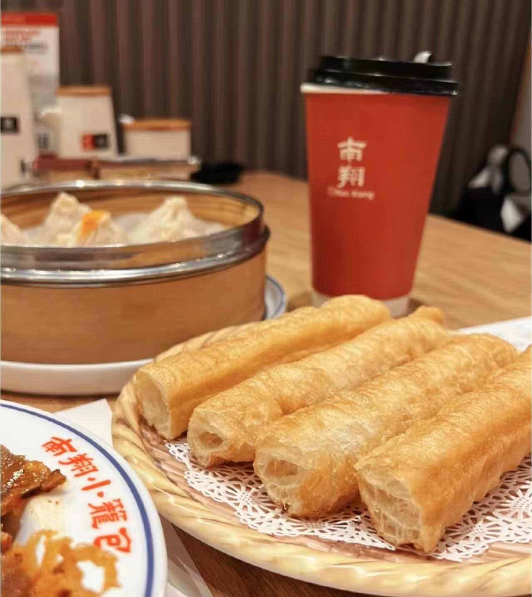

Youtiao
油条 — Traditional Chinese deep-fried dough stick.
Ingredients
- 2 cups all-purpose flour
- 1 teaspoon baking powder
- 1/2 teaspoon salt
- 1 cup water
- 1 teaspoon vegetable oil
- Oil for deep frying
Directions
- In a bowl, mix flour, baking powder, and salt.
- Add water and oil, then knead into a soft dough.
- Cover and let the dough rest for about 20 minutes.
- Roll the dough flat and cut into long strips.
- Stack two strips together and press lightly in the middle.
- Heat oil in a deep pan and fry the dough sticks until golden and crispy.
- Turn occasionally while frying to cook evenly.
- Remove and drain on paper towels before serving.